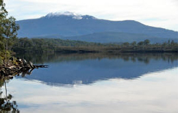
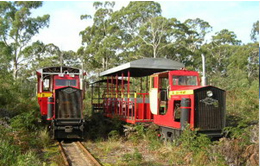
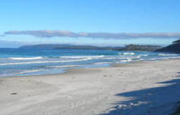

Check out the gallery page!
From Lune Lune River station travel through bush land abundant with bird life and wild flowers. Cross button grass plains and travel along the banks of Ida Bay and Lune River Estuary.

Prices and Times
From Lune Lune River station travel through bush land abundant with bird life and wild flowers. Cross button grass plains and travel along the banks of Ida Bay and Lune River Estuary.

Southport Lagoon Information
From Lune Lune River station travel through bush land abundant with bird life and wild flowers. Cross button grass plains and travel along the banks of Ida Bay and Lune River Estuary.